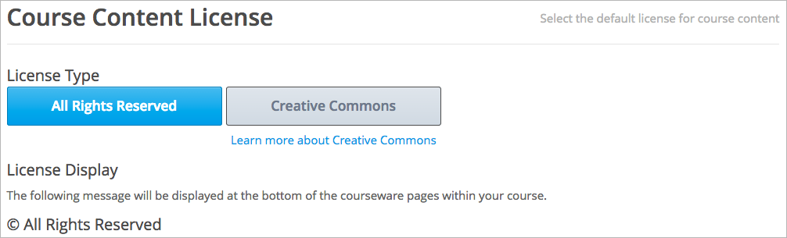
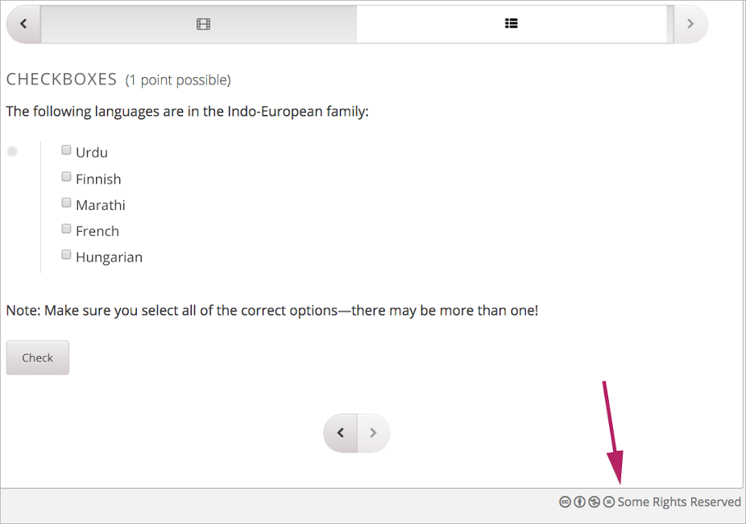
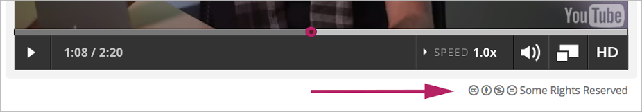

您可以为课程内容和视频文件指定授权方式。
通过指定许可，您可以与学生交流他们是否可以、如何转载使用您的课程内容。
Section Contents
您可以为课程内容和每个视频文件选择以下授权方式。
版权所有授权指您保留课程内容和视频的版权。学生不能转载或转发版权所有的课程内容和视频。
CC协议指学生可以分享或转载课程内容和视频，取决于您选择的授权许可。
当您选择CC协议授权课程或视频时，您需要指定以下选项。
| 授权项 | 描述 |
|---|---|
| 归属 | 此选项允许他人复制、分配、展示和演示您的作品，只要他们提供您要求的报酬。 此选项在edX所有课程内容CC协议授权中均为开启状态，您不能改变此选项。 |
| 非商业性 | 此选项允许他人复制、分配、展示和演示您的作品，以及在作品的基础上衍生新作品。 但是仅限于非商业用途。 |
| 禁止派生 | 此选项允许他人复制、分配、展示和演示您的原创作品，不能在作品的基础上衍生新作品。 此选项不能与 相同方式共享 同时勾选。 |
| 相同方式共享 | 此选项允许他人仅在与您作品的相同许可下派生新作品。 此选项不能与 禁止派生 同时勾选。 |
更多信息请参阅 Creative Commons website.
当您创建了新课程，授权设置为 版权所有 。您可以在 日程表与详细 页面更改课程授权设置。
您选择的授权选项应用于所有课程内容，包括视频，除非您为视频指定了不同的授权方式。 学生将在所有课件页面底部看到授权声明。
在 设置 菜单中，选择 日程表与详细 。
滚动到页面底部，查看 课程内容授权 部分。
为您的课程选择授权方式。
为学生授予课程内容的共享权和使用权，选择 CC协议 。 CC协议选项出现。
保留所有课程内容的权利，选择 版权所有 。
如果您想为视频指定与所有课程不同的授权方式，您必须在 高级选项 中进行设置。
例如，您可以将课程授权设置为CC协议，但使用第三方拥有版权的视频。 这种情况下，您可以将特定视频授权方式设置为 版权所有 。
如果视频与课程所有内容的授权方式相同，您不需要更改视频授权设置。
当学生在 课件 栏中查看内容时，他们将在页面底部看到您设置的版权信息。
如果视频和课程其他部分的授权方式不同，学生将在视频播放器底部看到版权信息。
如果您为课程或视频选择 版权所有 ，学生将看到 版权所有 ； 如果您选择 CC协议 并选择了允许项，学生将看到 保留部分权利 并可以查看详细内容。
{kind=link}
{kind=link}
{kind=link}
{kind=link}